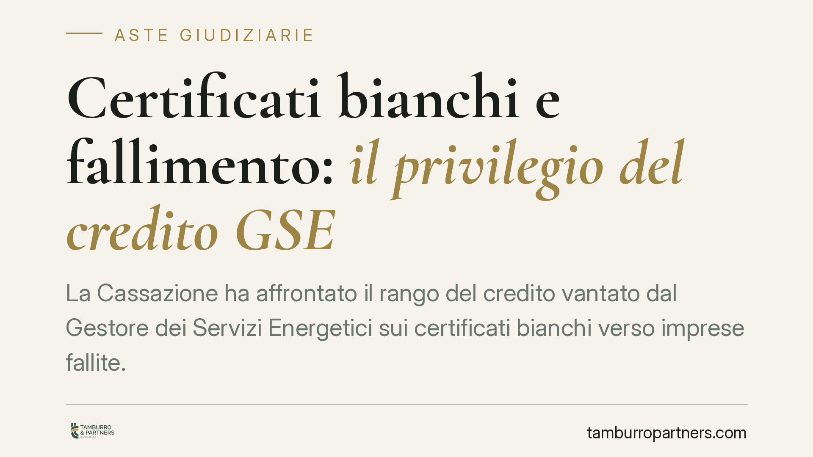

Certificati bianchi e fallimento: il privilegio del credito GSE
La Cassazione ha affrontato il rango del credito vantato dal Gestore dei Servizi Energetici sui certificati bianchi verso imprese fallite. La qualificazione come credito privilegiato incide sull'ordine di distribuzione del ricavato e, di riflesso, sulle aspettative degli altri creditori e sull'esito delle vendite competitive. Per creditori, curatori e partecipanti alle aste è un dato da leggere con precisione.

Il fatto
Il Gestore dei Servizi Energetici (GSE) eroga incentivi legati ai Titoli di Efficienza Energetica (TEE), i cosiddetti "certificati bianchi", strumenti pubblicistici che remunerano interventi di risparmio energetico. Quando l'impresa beneficiaria fallisce e l'incentivo viene revocato o risulta indebitamente percepito, il GSE agisce per il recupero delle somme, gestite dalla Cassa per i servizi energetici e ambientali (CSEA).
La questione controversa è il rango di questo credito nel concorso fallimentare: chirografario (senza preferenza) o privilegiato (con diritto a soddisfazione prioritaria). La Corte di Cassazione, Sezione I civile, si è pronunciata riconoscendo la natura privilegiata del credito.
> Nota sulla fonte. Alla data di redazione gli estremi completi della pronuncia (numero e data) non risultano verificabili in modo definitivo. Invitiamo a confrontare il presente contributo con il testo integrale della sentenza una volta pubblicata in banca dati ufficiale.
Inquadramento normativo
Il fondamento invocato è l'art. 9, comma 5, del D.Lgs. n. 123/1998, che riconosce privilegio ai crediti dello Stato derivanti dalla revoca di benefici pubblici. La norma nasce per gli incentivi alle imprese e assiste la restituzione di risorse pubbliche indebitamente fruite.
L'estensione al credito GSE sui certificati bianchi non è scontata. Presuppone due passaggi: primo, che il TEE abbia natura di beneficio pubblico riconducibile alla nozione di aiuto/agevolazione del 123/1998; secondo, che il GSE sia qualificabile come ente erogatore ai sensi della stessa disciplina. Il ragionamento della Corte muove dalla funzione pubblicistica dell'incentivo: le risorse che alimentano i TEE hanno provenienza collettiva (gestite tramite CSEA) e la loro erogazione persegue un obiettivo di interesse generale, l'efficienza energetica. Da qui la riconducibilità del recupero al privilegio del 123/1998, superando l'orientamento che vi vedeva un credito meramente chirografario di natura contrattuale.
Un chiarimento su cosa sia il privilegio. È una causa legittima di prelazione stabilita dalla legge in ragione della causa del credito (art. 2745 c.c.): non serve un atto di volontà del debitore. Si distingue così dalla garanzia volontaria — pegno o ipoteca — che nasce da un contratto o da un atto negoziale. Il privilegio opera automaticamente perché è la legge a ritenere quel credito meritevole di preferenza.
Decisivo è il grado del privilegio, cioè la sua posizione nell'ordine di soddisfazione. Gli artt. 2752 e 2778 c.c. collocano i privilegi generali sui mobili e ne fissano la graduatoria: due crediti entrambi privilegiati non concorrono alla pari, ma secondo il numero d'ordine dell'art. 2778 c.c. Individuare correttamente il grado del credito GSE è quindi essenziale per stabilire quanto realmente incassi rispetto agli altri privilegiati (erario, contributi previdenziali, retribuzioni).
Implicazioni pratiche
Per i creditori chirografari la conseguenza è diretta: un credito in più che precede nella distribuzione riduce l'attivo residuo disponibile per chi non gode di prelazione. La massa da ripartire tra i chirografari si assottiglia.
Sul piano delle aste giudiziarie, la materia si collega attraverso l'ordine di distribuzione del ricavato. Il prezzo di aggiudicazione non premia il creditore che per primo si è attivato, ma segue la graduatoria dei privilegi. Chi partecipa a una vendita competitiva su beni di un'impresa in procedura deve leggere il piano di riparto sapendo che i crediti pubblici privilegiati assorbono quote significative del realizzo.
Per il curatore cambia l'attività di verifica: la domanda del GSE va esaminata nella sua qualificazione e nel grado rivendicato, con conseguente collocazione nello stato passivo.
Cosa fare in concreto
- Verifica il rango attribuito al credito GSE nello stato passivo: privilegio, grado ex art. 2778 c.c. e importo, per misurarne l'impatto sulla tua posizione.
- Controlla i termini dell'opposizione: l'opposizione allo stato passivo si propone entro 30 giorni dalla comunicazione dell'esecutività (art. 99 l.fall.; art. 207 CCII per le procedure soggette al Codice della crisi). Sono termini perentori: è opportuno agire tempestivamente.
- Ricostruisci l'ordine di distribuzione prima di decidere se partecipare a un'asta, valutando quanto del ricavato sia già assorbito dai crediti privilegiati.
- Acquisisci il testo integrale della pronuncia e la documentazione GSE/CSEA sul titolo del credito, per contestarne eventualmente la qualificazione o il grado.
- Distingui privilegio e garanzia reale nella lettura del riparto: la presenza di ipoteche o pegni modifica ulteriormente le priorità sui beni gravati.
Contributo informativo a cura di Tamburro & Partners - Avv. Giuseppe Tamburro. Non costituisce parere legale.
Comprare bene all’asta si può.
Se vuoi acquistare un immobile all’asta in sicurezza o difendere un esecutato, scrivi allo studio. Ti rispondiamo entro un giorno lavorativo.